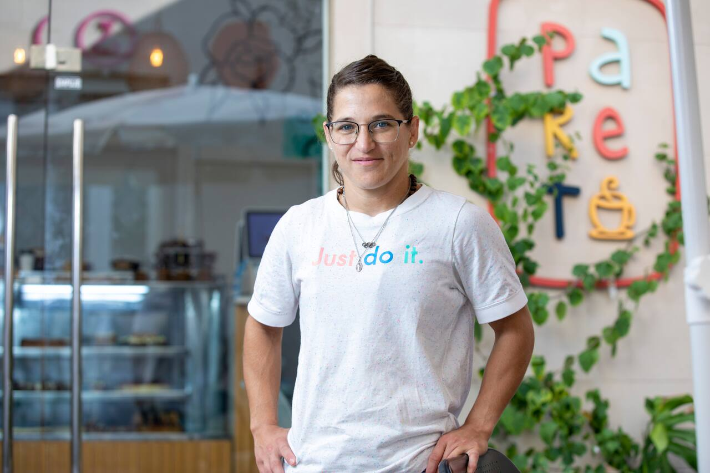

Nuestra historia
Pareto Caffè nació de la pasión de Paula Pareto por el deporte, la vida saludable y el buen café. En pleno corazón de San Fernando, nuestra cafetería se convirtió en un punto de encuentro donde los sabores auténticos se mezclan con la calidez de un espacio único.
Más que un café, es un lugar donde cada detalle cuenta: desde la selección de granos de especialidad hasta las opciones saludables para acompañar tu jornada.
Con sus 37 años, Paula Pareto hace malabarismos entre su trabajo como médica traumatóloga, su rol de entrenadora del equipo nacional de judo y el día a día del Pareto Caffè, el bar familiar que hace un año abrió con su familia en San Fernando. “Fue un poco inversión, un poco un sueño familiar. Volví a casa después de Tokio 2020 (los juegos olímpicos que al final se hicieron en agosto 2021), terminé las residencias médicas y estaba abierta a ver con qué seguía”, cuenta Paula, sentada en su café. “Pensé, ahora tengo un poco más de tiempo quiero invertir en algo, y si es algo familiar, excelente. ‘Ustedes díganme qué', les dije a mis hermanos Estefi (38) y Marco (35). A la semana vinieron Estefi y su marido y me propusieron poner un café de especialidad”.
